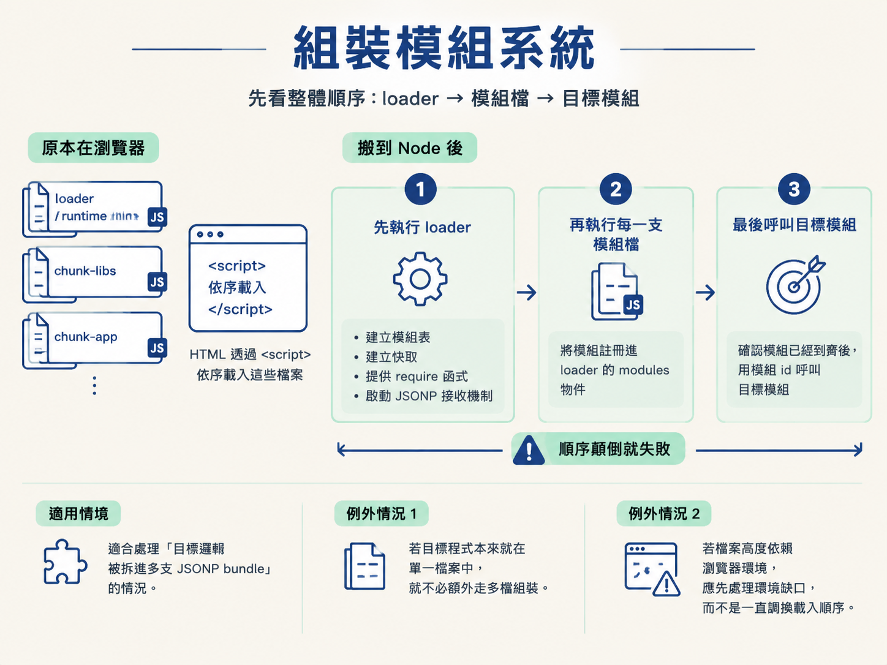
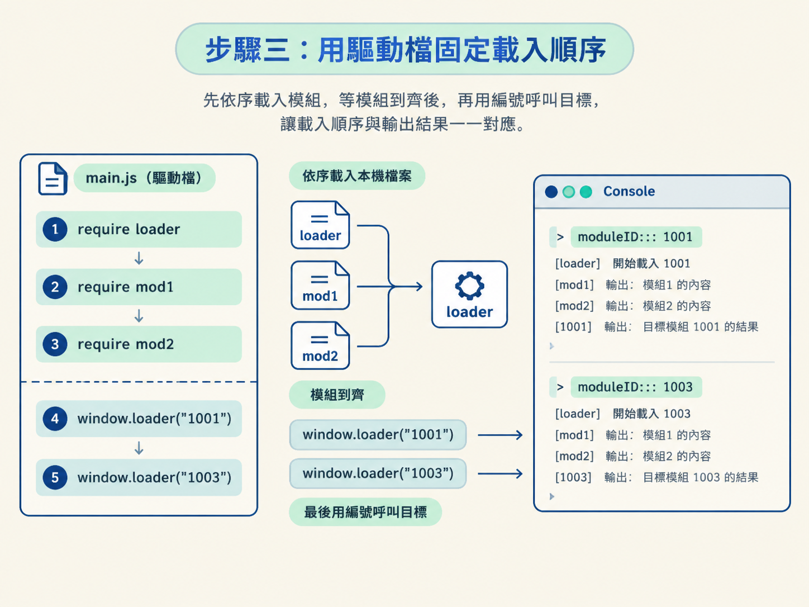

這一節要把 DevTools 裡抓到的多檔 JSONP bundle 搬進 Node。完成後，你會知道如何先載入 loader，再合併各個模組檔，最後用模組 id 呼叫目標模組。
把它放回「抓取 → 反爬 → 逆向」的流程來看：當請求需要簽名，而簽名邏輯散落在多支 webpack 檔案裡，就不能只複製其中一段函式。你得先把原本的模組系統組回來，才能穩定取得簽名結果。
動手前請先確認：這些 JavaScript 已經能在 Node 執行。最簡單的做法是先設定 window = global，再 require 各支檔案。若 bundle 一載入就要求 document、navigator 等瀏覽器物件，必須先補環境，否則程序會在模組組裝前就中斷。
打開 DevTools 的 Network 面板時，你可能會看到一支較短的 loader 或 runtime，以及數支體積較大的 chunk-libs、app。HTML 原本會用 <script> 依序載入它們；搬到 Node 後，你也得保留這個先後關係。
這套手法適合處理「目標邏輯被拆進多支 JSONP bundle」的情況。若目標程式本來就在單一檔案中，就不必額外走多檔組裝；若檔案高度依賴瀏覽器環境，則應先處理環境缺口，而不是一直調換載入順序。

第一條規則很簡單：loader 必須最先執行。它就像先把書櫃和管理員安排好，後面的模組檔才有地方報到。
先看 loader 的幾個關鍵部分：
function webpackJsonpCallback(data) {
var chunkIds = data[0];
var moreModules = data[1];
var executeModules = data[2];
…
for (moduleId in moreModules) {
if (Object.prototype.hasOwnProperty.call(moreModules, moduleId)) {
modules[moduleId] = moreModules[moduleId];
}
}
…
};
var installedModules = {};
…
function __webpack_require__(moduleId) {
…
console.log("moduleId:::", moduleId)
…
modules[moduleId].call(module.exports, module, module.exports, __webpack_require__);
…
return module.exports;
}
window.loader = __webpack_require__
var jsonpArray = window["webpackJsonp"] = window["webpackJsonp"] || [];
var oldJsonpFunction = jsonpArray.push.bind(jsonpArray);
jsonpArray.push = webpackJsonpCallback;這段 loader 依序完成三件事。
webpackJsonpCallback 接收模組檔送來的資料，並把 moreModules 裡的每個模組放進內部的 modules 物件。__webpack_require__ 根據模組 id 執行對應函式，再回傳該模組的 exports。程式也把它掛到 window.loader，方便稍後直接呼叫。window.webpackJsonp 的 push 換成 webpackJsonpCallback。從此之後，模組檔表面上是在 push，實際上是在請 loader 接收並登記模組。執行完這支檔案後，預期 window.loader 已經存在，而且後續的 JSONP push 已有接收者。如果此時出現 window.loader is not defined，先檢查 loader 是否真的執行，以及 window 是否已在 Node 中正確建立。
loader 就緒後，再執行模組檔。第一支示範檔會把一批模組 push 給 window.webpackJsonp：
!(window["webpackJsonp"] = window["webpackJsonp"] || []).push([["app"], {
0: function (e, t, n) {
e.exports = n("56d7")
},
"1001": function () {
console.log("1001 fn ....")
},
"1002": function () {
console.log("1002 fn ....")
}
}, [[0, "runtime", "chunk-elementUI", "chunk-libs"]]]);這個陣列可以分成三部分：
["app"] 是這批模組所屬的 chunk 名稱。moreModules。第二支模組檔的形式相同，只是帶進來的模組編號不同：
!(window["webpackJsonp"] = window["webpackJsonp"] || []).push([["app"], {
0: function (e, t, n) {
e.exports = n("56d7")
},
"1003": function () {
console.log("1001 fn ....")
},
"1004": function () {
console.log("1002 fn ....")
}
}, [[0, "runtime", "chunk-elementUI", "chunk-libs"]]]);因為 loader 已經改寫 push，所以這兩支檔案執行時，實際上會連續呼叫兩次 webpackJsonpCallback。模組 "1001" 到 "1004" 也會陸續合併進同一個 modules 物件。
不要先執行模組檔，再補載 loader。順序顛倒時，模組檔只會碰到原本的陣列 push，無法直接進入 loader 的內部模組表，之後用編號呼叫時就可能得到「模組不存在」之類的錯誤。
接著建立一支驅動檔，把載入順序明確寫下來：先 require loader，再 require 兩支模組檔，最後才呼叫模組。
require("./03 多文件的webpack")
require("./04 mod1")
require("./05 mod2")
window.loader("1001")
window.loader("1003")前面三行 require 會依序執行本機檔案。第一行先建立模組系統；第二、三行把兩批模組送進去。等模組到齊後，最後兩行才分別用 "1001" 與 "1003" 呼叫目標。

執行時，loader 裡的 console.log("moduleId:::", moduleId) 會先印出模組 id，接著才會看到各模組本身的輸出。這條 Console 軌跡可以用來確認兩件事：模組是否已成功註冊，以及你呼叫的編號是否正確。
若某個 id 能印出 loader 的呼叫紀錄，卻在執行模組時缺少其他編號，通常表示依賴的模組檔還沒載入。這時應回到 Network 面板確認是否漏抓 chunk，而不是直接修改目標函式。
前面的 "1001" 與 "1003" 只是用來驗證組裝流程。套到真實站點時，操作方式不變，只需要補齊實際檔案，並把呼叫編號換成簽名模組的 id。
window.loader("簽名模組的 id") 取得該模組的匯出內容。這裡要留意一個分支：如果 window.loader 回傳的不是函式，而是物件，就要從物件中找出真正負責簽名的方法；不要預設每個模組都會直接匯出單一函式。
取得簽名值後，就能像單檔 bundle 的做法一樣，把它接回 Python 的請求流程。多檔版真正增加的工作，是先按正確順序把分散的模組餵回同一套 loader。
先跑示範驅動檔。你應該能在 Console 看到 1001、1003 的模組呼叫軌跡，以及對應模組自己的輸出。這表示 loader 已先建立，兩支模組檔也成功合併。
換成真實站點後，可驗證的結果則是：所有必要檔案都能在 Node 依序載入，Console 能追到簽名模組的執行軌跡，最後也能從指定模組取得簽名結果。
這一節只處理多檔 bundle 的組裝程序。至於 document、navigator 等瀏覽器環境為什麼缺少，以及應該補到什麼程度，屬於環境補齊的問題；若程式卡在那一層，應先處理環境，再回來驗證載入順序。